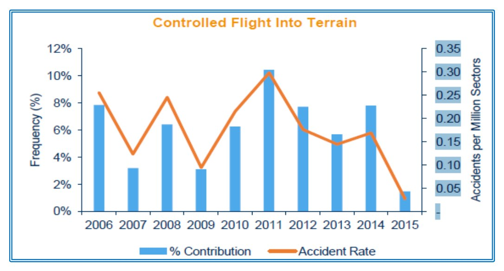
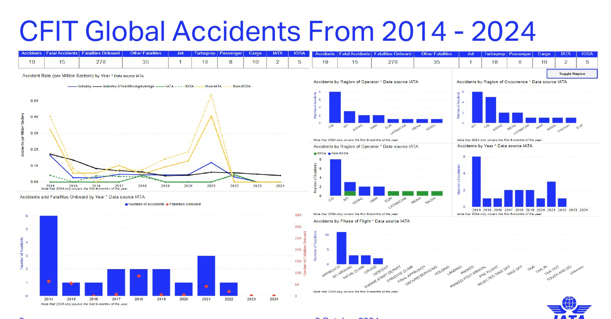
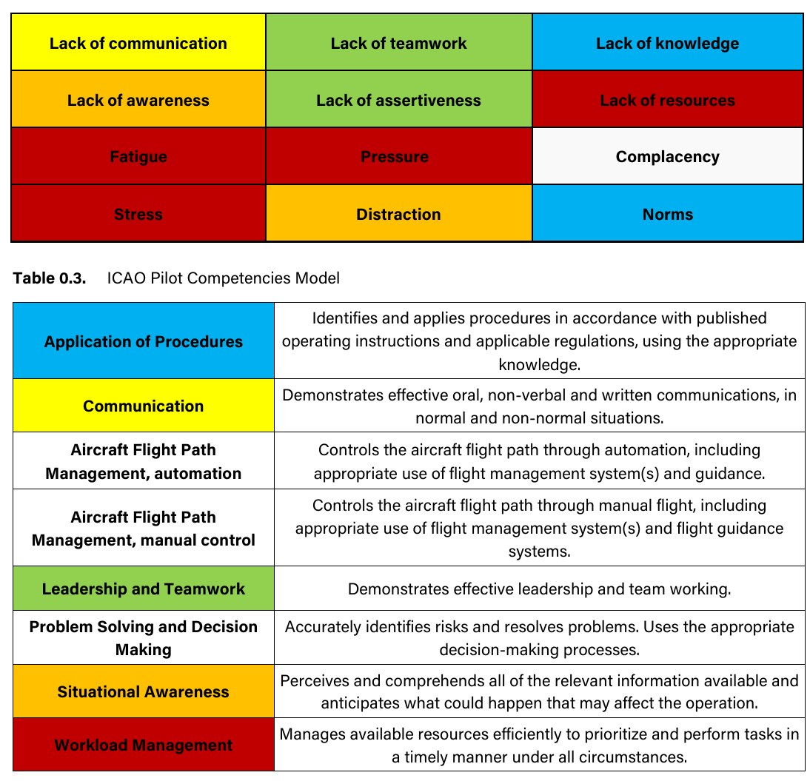
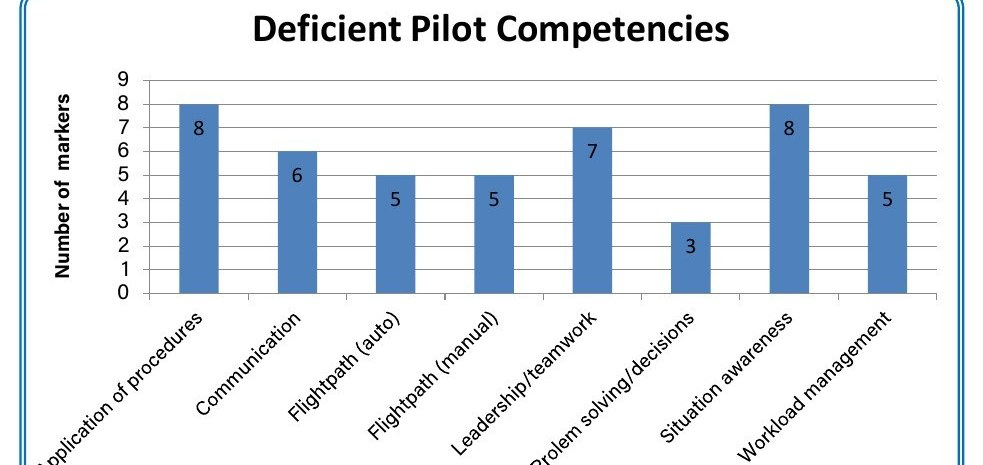
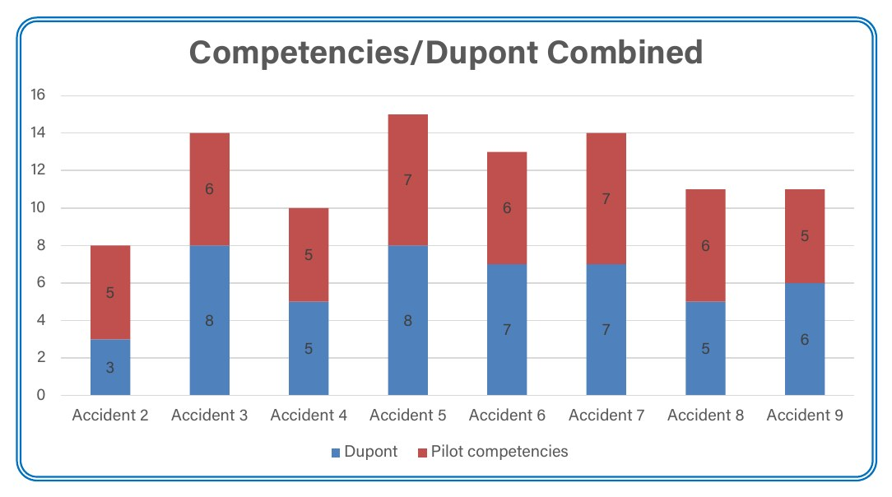
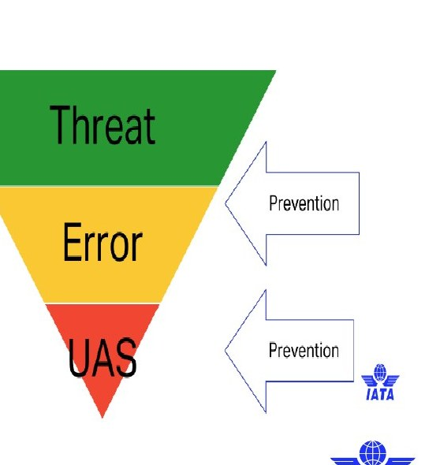

Controlled flight into terrain, an ICAO global high-risk category: data and scenarios, altimetry, CDFA, EGPWS modes and the escape manoeuvre, human factors and case studies, and the interactive FSF CFIT risk checklist.
13 lessons · 3 modules · about 2 hours
Training material only. It does not replace the Aircraft Flight Manual, FCOM, QRH, MEL or the Domestic Airlines Operations Manual, which always take precedence.
Lesson 01: CFIT in the World: Definition, Data and Priorities
Lesson 1 of 13 · about 10 min
Learning objectives
Define controlled flight into terrain (CFIT).
State why ICAO lists CFIT as a global high-risk category.
Describe the CFIT statistics and where CFIT accidents happen.
Most CFIT accidents happen on approach — often on non-precision approaches.
Definition
Controlled flight into terrain (CFIT) occurs when an airworthy aircraft, under the complete control of the crew, is inadvertently flown into terrain, water or an obstacle. The crew is generally unaware of the danger until it is too late.
Most CFIT accidents happen during approach and landing, often on non-precision approaches.
Many are caused by a loss of situational awareness, particularly in the vertical plane. Many crash sites lie on the extended centreline of an approach.
Unfamiliarity with the approach, or misreading the approach chart, are common factors — especially where the approach has several step-down altitudes between the initial and final approach fixes.
The result is almost always a hull loss with fatalities. Since terrain awareness warning systems (TAWS) became mandatory, CFIT accidents have become much rarer — but they still happen, mostly where the warning was absent, ignored or acted on too late.
A global high-risk category
ICAO's Global Aviation Safety Plan (Doc 10004, 2026–2028) aims at zero fatal accidents in commercial operations by 2030 and beyond. It names five global high-risk categories (G-HRC), on which States, regions and operators must concentrate:
Controlled flight into terrain (CFIT)
Loss of control in flight (LOC-I)
Mid-air collision (MAC)
Runway excursion (RE)
Runway incursion (RI)
The same categories apply to turboprops and jets alike. National and company safety plans (NASP, SMS) must address them.
What the data say
IATA study, 67 CFIT accidents 2005–2014
Fatalities
1,346
Hull loss
99 % of CFIT accidents
Accidents with fatalities
88 %
Occupants surviving
about 18 %
Phase of flight
approach 47.7 %, landing 16.4 %

CFIT accidents 2006–2015: share of all accidents and rate per million sectors. Source: IATA, CFIT — A Study of TAWS Capability and Human Factors in CFIT Accidents 2005–2014, Figure 0.1.
CFIT is rare, but when it happens it is almost never survivable. It remains one of the two leading causes of fatal commercial accidents, with loss of control in flight.

CFIT accidents worldwide 2014–2024: accidents and fatalities by year, region and phase of flight. Source: IATA CFIT workshop — CFIT Detailed Implementation Plan (2024).
IATA notes that 24 % of CFIT accidents worldwide in 2014–2024 could not be fully classified because of insufficient data — three of them involved operators in the AFI region. Reporting matters.
Defences
Standard operating procedures, including briefings and callouts;
terrain awareness warning systems (EGPWS / TAWS);
situational awareness relative to terrain;
flying the published IFR procedure — never improvising in IMC;
appropriate use of the autoflight system;
training — including the type-specific escape manoeuvre.
Contributing factors
Weather: rain, turbulence and icing increase workload; poor visibility and darkness contribute to disorientation.
Human factors: fatigue, complacency on familiar routes, distraction and high workload in the approach.
Automation: wrong mode, wrong target, or the crew not noticing an unintended descent.
Key takeaways
CFIT: an airworthy aircraft, under control, flown into terrain without the crew realising.
Most occur in approach and landing, often non-precision approaches.
Defences: SOPs, EGPWS, terrain awareness, published procedures, automation, training.
Knowledge check
In which phase of flight do most CFIT accidents occur?
Take-off
Cruise
Approach and landing
Taxi
Answer: C. Most CFIT accidents occur during approach and landing, often on non-precision approaches.
Module 1 · Understanding CFIT
Lesson 02: How CFIT Happens: Scenarios, Precursors and Defences
Lesson 2 of 13 · about 9 min
Learning objectives
Describe typical pilot-induced and ATC-induced CFIT scenarios.
List the contributing factors found in CFIT accidents.
Explain precursors and the layered defences against CFIT.
Most CFIT accidents follow the same few traps.
Two typical scenarios
Pilot-induced
ATC-induced
Weather is worse than forecast. To keep or regain visual contact in very low cloud, the pilot descends below the MSA and strikes the ground — often relying on GPS and losing terrain awareness.
During radar vectors at 210 kt, the controller gives a heading towards the ILS but, distracted, fails to give the intercept heading. The crew, unfamiliar with the approach, do not query it in time; the aircraft flies through the localiser into high terrain.
Scenarios from SKYbrary, Controlled Flight Into Terrain.
What the investigations found
The IATA analysis of CFIT accidents identified, again and again:
CFIT in most phases, but mostly in approach and landing, often on non-precision approaches;
descent below MDA or DA without adequate visual reference;
no response, or a delayed response, to ground proximity warnings;
non-adherence to SOPs, improvised approaches in IMC, operation in low cloud and poor visibility;
early GPWS equipment, or none.
Contributing factors
Weather: rain, turbulence and icing raise workload; poor visibility and night cause disorientation.
Approach design and charts: unclear step-down fixes; approaches close to terrain for noise or airspace reasons.
Non-standard phraseology leading to confusion — altitude versus flight level, QNH versus QFE.
Fatigue and disorientation in a demanding phase of flight.
Precursors and defences
A precursor is a warning that a defence is weak: an unexpected EGPWS alert, a level bust near terrain, a wrong altimeter setting, an unstable approach continued. Report every one — they show where to strengthen the defences:
SOPs and briefings; terrain awareness.
Stabilised approaches and CDFA; radio altimeter use.
ATC minimum safe altitude warning (MSAW) and good phraseology.
EGPWS / TAWS with current terrain and obstacle data (eTOD).
Training, reporting and a just culture.
Key takeaways
Pilot-induced: descending below MSA to stay visual; ATC-induced: a vector into terrain not queried.
Investigations: NPA, descent below minima, lost position awareness, CRM failure, late EGPWS response, SOP deviation.
Precursors are warnings — report them to strengthen the defences.
Knowledge check
Which is a CFIT precursor that should be reported?
A normal ILS approach
An unexpected EGPWS alert on approach
A smooth landing
A routine level change
Answer: B. An unexpected EGPWS alert shows a weak defence and must be reported.
Module 1 · Understanding CFIT
Lesson 03: Altimeters, Safe Altitudes and Charts
Lesson 3 of 13 · about 10 min
Learning objectives
Apply correct altimeter setting procedures.
Use minimum safe altitudes and chart information.
Recognise when temperature corrections are needed.
Know the altimeter setting, the safe altitude and the terrain around you.
Altimeters
Know the units used in the area: hectopascals or inches of mercury, feet or metres. Be ready to convert feet and metres.
Be vigilant during radio transmissions: read back the altimeter setting in full, and verify if in doubt — QNH 1013 and 29.92 can be confused.
Apply the correct setting for the phase of flight (transition altitude and level), with a cross-check and read-back procedure on the flight deck.
Cross-check the radio altimeter with the barometric altimeter, especially in the approach.
Fly higher than the minimum altitudes during atmospheric anomalies — strong winds over terrain, very low temperatures.
Some EGPWS installations use geometric altitude (from GPS), which reduces errors from wrong altimeter settings or non-standard temperatures.
Safe altitudes
Make sure the right charts are on board and up to date. Use colour terrain contours when available.
Study the minimum safe altitude information — MSA, MORA / grid MORA, minimum sector altitudes and minimum vectoring altitudes.
Know and fly at or above the safe altitude for your area of operation.
Descend below the MSA only when established on a published instrument procedure, under radar control with an appropriate clearance, or when visual with the terrain.
Know the height of the highest terrain or obstacle in the area and your position relative to it.
Cold temperatures
In air colder than ISA, the aircraft is lower than the altimeter shows. Apply cold temperature corrections to minimum altitudes according to PANS-OPS and the company procedure — see Lesson 24 of the Cold Weather Operations course.
Rule of thumb
The error is about 4 % of the height above the altimeter-setting source for every 10 °C below ISA. Example: aerodrome temperature −20 °C at sea level is 35 °C below ISA, so at 3,000 ft above the aerodrome the aircraft can be about 3,000 × 4 % × 3.5 ≈ 420 ft lower than indicated. Use the PANS-OPS / company correction table for the actual values.
Key takeaways
Know the units; read back and cross-check every altimeter setting.
Cross-check radio and barometric altimeters.
Use up-to-date charts; stay at or above MSA unless on a published procedure, under radar control or visual.
In cold air you are lower than indicated — apply corrections.
Knowledge check
When may you descend below the MSA?
Whenever ATC is in contact
When established on a published procedure, under radar control with clearance, or visual with terrain
When the radio altimeter shows more than 1,000 ft
When the GPS is serviceable
Answer: B. Descent below MSA is only safe on a published procedure, under radar control with clearance, or when visual with the terrain.
Module 1 · Understanding CFIT
Lesson 04: ATC, Complacency and Crew Alertness
Lesson 4 of 13 · about 8 min
Learning objectives
Challenge clearances that conflict with terrain awareness.
Recognise complacency on familiar routes.
Use briefings and callouts to keep terrain awareness.
Challenge clearances that do not fit your terrain picture.
Working with ATC
You are responsible for terrain clearance — including when accepting an altitude clearance.
Challenge or refuse ATC instructions that are not clearly understood, are questionable, or conflict with your own assessment of the aircraft's position relative to terrain.
Use standard phraseology and good radio discipline. Read back every clearance so that everyone agrees on its content.
Do not accept unreasonable clearances, such as a descent that does not fit the terrain or the approach.
Use the autopilot mode that makes compliance with the ATC instruction easiest and most visible.
Complacency
Familiarity can lead to complacency. Do not assume this flight will be like the last one.
Keep a professional attitude, even at an aerodrome you know well.
Brief the operational differences: NOTAMs, inoperative aids, a different runway, the weather.
Briefings and callouts
Terrain awareness is a primary reason for briefings and callouts. Both pilots must share a common understanding of what to expect.
Brief the MSA, the highest terrain, the approach and missed approach, and the escape route.
Call out FMA and FMS changes, deviations from the path, and undesirable energy states.
Warning
During an approach in IMC, fly the published IFR approach procedure only. Do not improvise.
Key takeaways
The crew is responsible for terrain clearance — challenge doubtful clearances.
Familiarity breeds complacency; brief the differences every time.
Brief MSA, terrain and escape route; call out FMA changes and deviations.
Knowledge check
ATC clears you to descend to an altitude below the MSA, but you are not yet established on the approach and are unsure of your position. What do you do?
Descend as cleared
Question the clearance and do not descend until your position and terrain clearance are confirmed
Descend at a low rate
Ask the cabin crew to look outside
Answer: B. The crew is responsible for terrain clearance. Challenge any clearance that conflicts with your terrain awareness.
Module 2 · Prevention and EGPWS / TAWS
Lesson 05: SOPs, Stabilised Approaches and CDFA
Lesson 5 of 13 · about 10 min
Learning objectives
Apply stabilised approach criteria and the go-around policy.
Fly non-precision approaches with the CDFA technique.
Use the autoflight system to reduce CFIT risk.
CDFA: one constant angle to the runway.
Standard operating procedures
Do not invent your own procedures. Follow the company SOPs.
Before the approach, know which approach and runway aids are available (NOTAMs, ATIS, pilot reports) and use all of them.
Understand the approach, missed approach and departure procedures, and comply with them.
Stabilised approach
Fly stabilised approaches. If the aircraft is not stabilised by 1,000 ft above aerodrome elevation in IMC or 500 ft in VMC (or the gates in your Operations Manual), go around. Domestic Airlines applies a no-fault go-around policy.
Continuous descent final approach (CDFA)
Continuous descent final approach (CDFA, also called CANPA) keeps the aircraft stabilised on a constant path. EASA requires CDFA for non-precision approaches unless otherwise approved (CAT.OP.MPA.115).
EASA requires non-precision approaches to be flown with the CDFA technique unless otherwise approved (CAT.OP.MPA.115). The company presentations also call it CANPA (constant angle non-precision approach).
The aircraft descends on a constant angle — typically about 3° — from the final approach fix to the runway, without levelling off at the MDA.
At the decision point (DA/H or MDA/H with the add-on defined by the company), if the required visual references are not in sight, go around.
Where available and trained, use the autoflight system — for example LNAV/VNAV or FPA modes — to fly the constant angle.
Automation
Use automation appropriately to reduce workload and to fly stabilised approaches.
Understand the autopilot modes. Monitor the FMA, and intervene manually if the aircraft does not do what is intended.
Avoid excessive descent rates and low or high speeds at low altitude.
The briefing: the first defence
IATA's CFIT implementation plan stresses that a thorough briefing lets the crew know the main features of the departure, descent, approach and missed approach, the terrain and the hazards. Brief:
Departure briefing
Approach briefing
Significant terrain and obstacles along the departure route; the SID and the MSA; the engine-out procedure
Descent profile and energy management; terrain and approach hazards; the elements of an unstable approach; the missed approach; MSA and the applicable minima (visibility, RVR, ceiling); the go-around altitude
Key takeaways
Not stabilised by 1,000 ft IMC / 500 ft VMC (or company gates): go around.
Non-precision approaches: CDFA (CANPA) — constant angle, no levelling at MDA.
Know the autopilot modes; monitor the FMA; intervene if needed.
Knowledge check
What is the main CFIT benefit of the CDFA technique?
It saves fuel
It avoids early step-downs and level flight close to terrain, keeping the approach stabilised
It allows descent below the MDA
It removes the need for a missed approach
Answer: B. CDFA flies a constant angle like an ILS, avoiding the dive-and-drive profile that brings the aircraft low and level near terrain.
Module 2 · Prevention and EGPWS / TAWS
Lesson 06: EGPWS / TAWS: The System and the Terrain Display
Lesson 6 of 13 · about 11 min
Learning objectives
Explain why TAWS is required and what the EGPWS adds to the classic GPWS.
List the EGPWS inputs and the effect of a wrong input.
Read the terrain display and use the inhibit switches correctly.
The EGPWS looks ahead using a terrain database and the aircraft position.
Why TAWS
ICAO Annex 6 and EASA CAT.IDE.A.150 require a terrain awareness warning system (TAWS) on commercial aeroplanes. The first generation, the GPWS, looked only down with the radio altimeter: it could not warn of a steep slope ahead in time. The Enhanced GPWS (EGPWS) adds a worldwide terrain, obstacle and runway database and the aircraft position, so it can look ahead of the aircraft. Since EGPWS became mandatory, CFIT accidents with a working, correctly used system have become very rare.
What the EGPWS uses and what it gives the crew. A wrong input (for example a faulty radio altimeter or a poor GNSS position) degrades the alerts — this is why some failures have MEL and QRH procedures.
Position and altitude
The look-ahead function depends on an accurate position (GNSS, or FMS position) and a valid, current database.
Many installations compute a geometric altitude from GNSS, barometric and radio altitude. It reduces errors from a wrong altimeter setting or very cold temperatures.
A position error, an out-of-date database or an aerodrome not in the database can cause nuisance alerts — or missed alerts. Report every nuisance alert so that the database can be checked.
The terrain display
* 250 ft below with the gear down. Typical EGPWS terrain colours: the colour depends on terrain height relative to the aircraft, not on absolute elevation. Some installations add a “peaks” mode or cyan for water — check your FCOM / AOM.
Select the terrain display in the climb and descent, especially near high terrain — it gives the picture before any alert.
When a look-ahead caution or warning is triggered, the display usually pops up automatically and the threatening terrain is shown in solid yellow (caution) or solid red (warning).
The terrain display is not for navigation: never use it to manoeuvre around terrain in IMC.
Inhibits, failures and the MEL
Typical controls: a flap override / flap inhibit (landing with less than landing flaps, per the QRH), a gear override, a terrain inhibit (look-ahead off, for example when position is unreliable — only when the QRH or the company procedure says so) and a glideslope cancel.
Never inhibit a function to silence an alert you do not understand.
An EGPWS failure or a terrain function failure is shown on the flight deck; dispatch is only possible within the MEL limits, and the crew must brief the lost protection.
Switch names and locations differ between the B737-800, Q400 and Q200 — check the FCOM / AOM of your fleet.
Keeping the system effective (IATA CFIT plan)
Up-to-date software and databases — terrain, obstacle and runway databases updated as issued by the manufacturer, under one department's responsibility and a formal process.
GNSS position source — the EGPWS should use GPS/GNSS position; without it, the look-ahead depends on the FMS position.
Terrain display policy — at least one pilot selects the terrain display in critical phases (climb, and descent below MSA); both pilots when weather is not a threat.
Always active and serviceable — procedures ensure the EGPWS is never left inhibited.
GPS interference — report GNSS jamming or spoofing and radio altimeter anomalies immediately to ATC and the authority: they degrade the EGPWS.
Not a navigation tool
The EGPWS is not a primary reference for terrain or obstacle avoidance. The crew remains responsible for terrain clearance — and, on a visual approach, for its own separation from terrain and obstacles.
Key takeaways
TAWS is mandatory; EGPWS adds a terrain database and look-ahead to the classic GPWS.
Wrong position, database or radio altimeter input = wrong or missed alerts.
Terrain colours show height relative to the aircraft; solid yellow = caution, solid red = warning.
Inhibit switches only as the QRH or company procedure says; EGPWS failures per MEL.
Knowledge check
On the terrain display, what does high-density red show?
Terrain below the aircraft
Terrain more than 2,000 ft above the aircraft
Water
Terrain with no database
Answer: B. Red dots show terrain more than about 2,000 ft above the aircraft altitude; solid red marks a warning area.
Module 2 · Prevention and EGPWS / TAWS
Lesson 07: EGPWS Basic Modes 1 to 7
Lesson 7 of 13 · about 12 min
Learning objectives
Describe what each basic mode protects against.
Recognise the aural alert of each mode.
Know which alerts are cautions and which are warnings.
The basic modes watch the terrain below the aircraft.
The basic modes
The basic modes compare the radio altitude, the barometric descent rate, the configuration and the glideslope with envelopes. They work without the terrain database — but they react to the terrain below, so their warning time is short.
The basic modes use the radio altimeter and aircraft data — they work even without the terrain database, but they cannot see a steep slope ahead. The enhanced look-ahead function covers that (Lesson 7).
Mode
Protects against
Caution
Warning
Active
1
Excessive descent rate for the height above terrain
“SINK RATE”
“PULL UP”
All phases, close to the ground
2
Excessive closure rate with rising terrain
“TERRAIN TERRAIN”
“PULL UP”
Mainly when not in landing configuration (2A); reduced envelope in landing configuration (2B)
3
Altitude loss after take-off or go-around
“DON'T SINK”
—
Climb after take-off or go-around
4
Unsafe terrain clearance when not in landing configuration
4A gear up, 4B flaps not in landing position, 4C after take-off
5
Excessive deviation below the glideslope
“GLIDESLOPE” (louder as the deviation grows)
—
ILS approach, at low height; can be cancelled
6
Advisory callouts
Altitude callouts, “MINIMUMS”, “BANK ANGLE”
—
As configured for the fleet
7
Windshear (reactive), where installed
Windshear caution
“WINDSHEAR WINDSHEAR WINDSHEAR”
Take-off and approach, at low height
Envelopes, heights and exact wording depend on the installation and the fleet. Predictive windshear (weather radar, B737-800) is a separate system — see the Windshear course.
How to react
Mode 1 “SINK RATE” — reduce the descent rate now. If “PULL UP” follows, escape manoeuvre.
Mode 2 “TERRAIN TERRAIN” — you are closing with terrain: check position, altitude and the terrain display; climb if in doubt. “PULL UP”: escape manoeuvre.
Mode 3 “DON'T SINK” — stop the descent and re-establish the climb (often after a too early flap retraction or a thrust reduction).
Mode 4 “TOO LOW GEAR / FLAPS” — you are low and not configured: if this is not a planned non-normal landing, go around. “TOO LOW TERRAIN”: climb.
Mode 5 “GLIDESLOPE” — correct back to the glideslope; if not possible, go around.
When several alerts sound, the system gives priority to the most urgent — windshear and “PULL UP” first. The crew response follows the same order: a warning always means the escape manoeuvre (Lesson 8).
Key takeaways
Mode 1 descent rate, 2 terrain closure, 3 loss after take-off, 4 too low not configured, 5 below glideslope, 6 callouts, 7 windshear.
Basic modes look down; their warning time is short.
After take-off, the crew retracts the flaps too early and the aircraft starts to sink. Which alert is expected?
“SINK RATE” (mode 1)
“DON'T SINK” (mode 3)
“GLIDESLOPE” (mode 5)
“TOO LOW GEAR” (mode 4)
Answer: B. Mode 3 warns of altitude loss after take-off or go-around: “DON'T SINK”.
Module 2 · Prevention and EGPWS / TAWS
Lesson 08: Enhanced Functions and Crew Response
Lesson 8 of 13 · about 10 min
Learning objectives
Describe the EGPWS look-ahead and terrain clearance floor functions.
Distinguish cautions from warnings.
Apply the company response to EGPWS cautions and warnings.
At night or in IMC, follow an EGPWS warning immediately.
Enhanced functions
Terrain look-ahead — compares the predicted flight path with the terrain and obstacle database: “CAUTION TERRAIN” / “TERRAIN AHEAD” first, then “TERRAIN AHEAD, PULL UP” / “PULL UP”. Obstacle versions: “CAUTION OBSTACLE”, “OBSTACLE AHEAD, PULL UP”.
Terrain clearance floor — a protection floor around each runway in the database: if the aircraft descends below it short of the runway, “TOO LOW TERRAIN”. It catches a “landing short” in a flat area where the basic modes stay silent.
Some installations add a runway field clearance floor and “peaks” display modes.
The look-ahead function depends on accurate aircraft position and an up-to-date terrain database. Exact timings depend on the installation.
Cautions and warnings
Caution (amber) — for example “SINK RATE”, “TERRAIN TERRAIN”, “DON'T SINK”, “TOO LOW FLAPS”, “TOO LOW GEAR”, “CAUTION TERRAIN”, “CAUTION OBSTACLE”, “BANK ANGLE”, “GLIDESLOPE”. Company SOP: the crew shall immediately assess the flight path or configuration with respect to the ground, and the PF shall take appropriate action to correct the situation. Q200 SOP: the PF verbalises the action to the PM with “CORRECTING”.
Warning (red) — for example “TOO LOW TERRAIN”, “TERRAIN PULL UP”, “OBSTACLE PULL UP” or “PULL UP” (“WHOOP WHOOP PULL UP”). Apply the escape manoeuvre immediately (Lesson 8).
No delay
At night or in IMC, a warning must be followed without hesitation and without trying to confirm it visually. The Q200 SOP adds: “The flight crew must use a good judgment in this matter.” A warning should only ever be judged spurious in daylight VMC, with the terrain and obstacles clearly in sight and no doubt about the aircraft's position. Report every alert.
What the accidents show
The IATA study found that, where fitted, the GPWS/EGPWS performed as designed. In accidents with a working terrain warning system, the system gave enough time to react — but the crew delayed the response or made an inadequate avoidance manoeuvre. The warning works only if the response is immediate and complete.
Key takeaways
Look-ahead: CAUTION TERRAIN first, then TERRAIN AHEAD PULL UP; terrain clearance floor protects short of the runway.
Caution: assess the flight path and correct (“CORRECTING”).
At night or in IMC, never wait to confirm a warning visually.
Knowledge check
At night in IMC you hear “TERRAIN AHEAD, PULL UP”. What do you do?
Check the chart first
Apply the escape manoeuvre immediately
Reduce speed and level off
Ask ATC to confirm terrain clearance
Answer: B. A warning at night or in IMC requires the escape manoeuvre immediately, without trying to confirm it.
Module 3 · Escape, Human Factors and Risk
Lesson 09: The Escape Manoeuvre — by Fleet
Lesson 9 of 13 · about 10 min
Learning objectives
Apply the company EGPWS recovery procedure for your fleet.
Explain the reasons for each step.
Complete the recovery and inform ATC.
The escape manoeuvre: maximum power, wings level, pitch for the best climb.
Company procedures
Fleet
Pilot flying
Pilot monitoring
Dash 8-Q400 Company SOP, EGPWS Recovery (Rev 02)
Calls “CHECK POWER”. Selects GA and disconnects the autopilot. Advances the power levers to the detent, rolls wings level and pitches aggressively to initiate the climb, respecting the stick shaker. Targets VGA. Once clear of terrain: establishes level flight and reconfigures the aircraft.
Confirms NTOP on the engine display and calls “POWER SET”. Monitors radio altimeter and vertical speed and informs the PF of performance and terrain clearance. Once clear: advises ATC — “(call sign) EGPWS recovery, new altitude / flight level …”.
Dash 8-Q200 Company SOP, Table 25 EGPWS recovery
Calls “CHECK POWER”. Selects GA and disconnects the AP. Advances the power levers to MTOP, rolls wings level and pitches aggressively to initiate the climb, responding to the stick shaker. Targets VGA. Once clear: establishes level flight and configures the aircraft.
Confirms MTOP and calls “POWER SET”. Monitors radio altimeter and vertical speed and informs the PF of performance and terrain clearance. Once clear: advises ATC of the EGPWS recovery and new altitude or flight level.
Boeing 737-800 Boeing QRH / FCTM — check against your current QRH
Terrain Avoidance (QRH Non-Normal Manoeuvres, memory item): disconnect the autopilot and autothrottle; aggressively apply maximum thrust; simultaneously roll wings level and rotate to an initial pitch attitude of 20°; retract the speedbrakes; if terrain remains a threat, continue rotation up to the pitch limit indicator or stick shaker; do not change gear or flap configuration until terrain separation is assured. When clear: slowly decrease pitch and accelerate.
Assures maximum thrust; verifies all required actions are completed and calls out any omissions; calls out the radio altitude trend (increasing or decreasing). When clear: advises ATC.
Why each step matters
Maximum available power immediately — the climb gradient depends on excess thrust. Turboprops respond quickly; jets need several seconds to spool up.
Autopilot off, wings level — the lift vector must point up; a bank reduces the climb.
Pitch aggressively, respecting the stick shaker — the best climb gradient is obtained close to the stall warning. Do not exceed it.
Do not change the configuration during the escape unless your procedure says so. Retracting flaps or gear too early can reduce the climb capability.
The PM monitors radio altimeter and vertical speed and calls the trend — the PF concentrates on flying.
Continue until the warning stops and terrain clearance is assured, then level off, reconfigure and inform ATC.
Practise it
The escape manoeuvre is a last resort. It is practised in the simulator during recurrent training — so that, if needed, it happens instinctively.
Key takeaways
Q400: CHECK POWER → GA, AP off → power levers to detent → wings level, pitch aggressively (stick shaker) → NTOP, POWER SET → VGA.
Q200: the same sequence with MTOP.
B737-800: A/P and A/T off, maximum thrust, wings level, pitch 20° (then PLI / stick shaker), speedbrakes retracted, no configuration change — a QRH memory item.
After the escape: level off, reconfigure, tell ATC “EGPWS recovery”.
Knowledge check
During the Q400 EGPWS recovery, what does the PM confirm and call?
“Gear up”
NTOP on the engine display — “POWER SET”
“Flaps zero”
“Autopilot on”
Answer: B. The PM confirms NTOP on the engine display and calls “POWER SET”.
Module 3 · Escape, Human Factors and Risk
Lesson 10: Human Factors in CFIT Accidents
Lesson 10 of 13 · about 9 min
Learning objectives
Use the 'dirty dozen' and the ICAO pilot competencies to analyse CFIT accidents.
Identify the competencies most often deficient in CFIT accidents.
Apply threat and error management to terrain threats.
Situational awareness was lost in every CFIT accident analysed.
Two human factors models
The IATA CFIT study analysed each accident with two models: the twelve human error precursors (Dupont's "dirty dozen") and the ICAO pilot competencies used in competency-based and evidence-based training (PANS-TRG, Doc 9868).

The 'dirty dozen' human error precursors and the ICAO pilot competencies. Source: IATA, CFIT — A Study of TAWS Capability and Human Factors in CFIT Accidents 2005–2014, Tables 0.2 and 0.3.
What went wrong
Situational awareness was deficient in every accident.
Application of procedures, communication and leadership and teamwork were frequently deficient.
Among the "dirty dozen", lack of awareness, lack of knowledge, lack of communication and lack of teamwork came first.

Deficient pilot competencies in the CFIT accidents analysed: situational awareness and application of procedures lead. Source: IATA, CFIT — A Study of TAWS Capability and Human Factors in CFIT Accidents 2005–2014, Chart 1.
Precursors in each accident

Competencies and 'dirty dozen' precursors combined, accident by accident: every accident had several. Source: IATA, CFIT — A Study of TAWS Capability and Human Factors in CFIT Accidents 2005–2014, Chart 3.
Threat and error management
CFIT accidents follow the TEM chain: threats (terrain, weather, ATC, charts) and errors (wrong altitude, wrong setting, wrong mode) lead to an undesired aircraft state (below the profile, off track) — and then to terrain. Each step is a chance to stop the chain.

Threat and error management: prevent threats and errors from becoming an undesired aircraft state (UAS). Source: IATA CFIT workshop — CFIT Detailed Implementation Plan (2024).
Key takeaways
Situational awareness was deficient in every CFIT accident analysed.
Procedures, communication and teamwork were the next most deficient competencies.
TEM: stop the chain at the threat, the error or the undesired state.
Knowledge check
Which competency was found deficient in every CFIT accident analysed by IATA?
Workload management
Situational awareness
Manual flight path management
Communication
Answer: B. Situational awareness was deficient in all cases.
Module 3 · Escape, Human Factors and Risk
Lesson 11: CFIT Case Studies
Lesson 11 of 13 · about 10 min
Learning objectives
Learn from CFIT accidents analysed by IATA.
Recognise the near-CFIT events on Dash 8 aircraft.
Departed from the descent path and did not follow the chart's constant-angle descent points; descended below the 2,060 ft segment minimum after the FAF.
Fly the constant angle (CDFA); check each step altitude.
Jet, sea, 2006 — night IMC approach, 113 killed
Night flight after poor daytime rest; loss of situational awareness during the approach and go-around.
Fatigue and night approaches multiply the CFIT risk.
Jet, mountain, 2010 — circling in monsoon rain, 152 killed
During a circling approach the selected altitude was reduced below the circling minimum, contrary to SOP; the aircraft hit high ground.
Never descend below circling minima until on final with the runway in sight.
Accidents analysed by IATA (continued)
Case
What happened
Lesson
Jet, hill, 2011 — ILS/DME approach in low cloud, 12 killed
The aircraft drifted off the localiser; a go-around was started only 2 seconds before impact.
When the approach is not right, go around early.
Jet, sea, 2013 — VOR/DME NPA in rain, all survived
Continued below MDA without the required visual reference; the go-around was called at 20 ft.
No visual reference at MDA: go around immediately.
Cargo jet, short of runway, 2013 — night localiser NPA
Only the shorter runway with a non-precision approach was available; the descent continued below MDA without visual reference.
Brief NOTAMs and the approach options; respect the MDA.
Summarised from IATA, CFIT — A Study of TAWS Capability and Human Factors in CFIT Accidents 2005–2014, sections 7–15.
Dash 8 near-CFIT events
Event
What happened
Lesson
DHC-8, Svolvær, Norway, 2022
On final in cloud, the aircraft came within less than 300 ft of terrain. An incorrect altimeter setting put the approach 700 ft below the profile. The crew responded to a valid EGPWS warning and went around.
Read back and cross-check every altimeter setting; trust the EGPWS.
DHC-8, Val-d'Or, Canada, 2023
The captain made an incorrect FMS entry; the first officer (PF) continued an excessively steep, off-track descent without visual reference until terrain alerts ended the approach.
Verify FMS entries; monitor the vertical and lateral path; PM speaks up.
Source: SKYbrary, Controlled Flight Into Terrain — accidents and incidents.
Classic CFIT accidents
Accident
What happened
Lesson
Air Inter 148 Airbus A320, Mont Sainte-Odile, France, January 1992
During a night approach in mountainous terrain the aircraft descended far more steeply than intended; a confusion between vertical speed and flight path angle modes was considered a likely factor. No GPWS was fitted. 87 people died.
Monitor the FMA and the vertical profile; cross-check altitude against distance.
American Airlines 965 Boeing 757, near Cali, Colombia, December 1995
During a rushed approach the crew entered a wrong navigation point in the FMS; the aircraft turned towards high terrain while descending. The GPWS escape was flown, but the speedbrakes were still extended. 159 people died.
Do not accept a rushed approach; verify FMS entries; in the escape, maximum performance — speedbrakes retracted.
Korean Air 801 Boeing 747, Guam, August 1997
At night, in rain, the crew flew a non-precision approach while the glideslope was out of service, and descended below the minimum altitude before reaching the step-down fix. 228 people died.
Brief inoperative aids; respect step-down altitudes and MDA; use CDFA.
Key takeaways
Descending before being established, below step or circling minima, or below MDA without visual reference: the recurring trap.
Fatigue, night and IMC multiply the risk.
Dash 8 lessons: wrong altimeter setting, wrong FMS entry — cross-check and trust the EGPWS.
Knowledge check
In the 2022 Svolvær Dash 8 event, what put the approach 700 ft below the profile?
Icing
An incorrect altimeter setting
An engine failure
A wrong runway
Answer: B. An incorrect altimeter setting; a valid EGPWS warning prompted the go-around.
Module 3 · Escape, Human Factors and Risk
Lesson 12: CFIT Risk Assessment: the FSF CFIT Checklist
Lesson 12 of 13 · about 10 min
Learning objectives
Identify the destination factors that raise CFIT risk.
Explain how the risk multipliers (operation, region, night, IMC, crew) work.
Score a flight with the Flight Safety Foundation CFIT Checklist and decide on mitigations.
Score the risk before the flight — then mitigate.
Why assess CFIT risk
The Flight Safety Foundation CFIT Checklist turns the lessons of CFIT accidents into numbers. Part I scores the risk of a flight (negative values); Part II scores the defences of the company (positive values); Part III adds them. A negative total means a significant CFIT threat.
Biggest destination penalties: no radar or no ATC (−30), NDB or night black-hole visual approach (−30), limited runway lighting (−30), mountainous terrain (−20).
The penalties are multiplied: night and IMC (×5 together), the region of operation, the type of operation and a crew at maximum duty ending with a night non-precision approach.
Defences that score high: management that places safety before schedule and puts no stigma on a diversion or missed approach; procedures for terrain review and independent altitude checks; annual CFIT case reviews and GPWS escape practice in the simulator; full EGPWS and radio altimeter callouts.
Score a flight
Flight Safety Foundation CFIT Checklist — score a flight
Part I: choose the conditions of the flight (destination factors and risk multipliers). Part II: enter your company's risk-reduction totals from the full FSF checklist (company culture, flight standards, hazard awareness and training, aircraft equipment).
Try a day ILS to a radar-equipped airport, then a night NDB approach in mountainous terrain: see how the score changes.
A negative score is not a "no-go" by itself — it is a call to mitigate: brief the terrain and the MSA, use the best approach available, consider timing (daylight), fuel and alternate, and the most experienced crew.
Report the factors that the company can improve through the safety reporting system.
Key takeaways
Part I (risk, negative) × multipliers + Part II (defences, positive) = CFIT risk score.
Night + IMC, no radar, NDB/black-hole approaches and mountainous terrain raise the risk most.
A negative score calls for mitigation before the flight.
Knowledge check
In the FSF CFIT Checklist, what does a negative CFIT risk score indicate?
No risk
A significant CFIT threat that requires mitigation
The flight is cancelled automatically
An error in the checklist
Answer: B. A negative score indicates a significant threat; review and mitigate.
Module 3 · Escape, Human Factors and Risk
Lesson 13: Preventing CFIT: Training, the IATA Plan and the Company Role
Lesson 13 of 13 · about 10 min
Learning objectives
Describe the CFIT ground and simulator training content.
Apply the IATA CFIT implementation plan at operator and pilot level.
Summarise the key CFIT prevention principles.
Every CFIT lesson was learned the hard way.
Training
The ground training builds the awareness to recognise and avoid CFIT situations. The simulator training applies that knowledge and develops proficiency in the escape manoeuvre. This training is given at initial and type training and repeated in recurrent training (at least every two years for the full programme).
Topics to review regularly:
avoiding excessive descent rates, and low or high speeds at low level;
autopilot modes, FMA and FMS callouts, and manual intervention;
barometric and radio altimetry; stabilised approach criteria; descent below MSA;
the missed approach — especially when it appears likely — and go-around awareness;
approach charts and en-route charts (including grid MORA);
CRM and threat and error management briefings that highlight terrain.
The simulator session should include LOFT into airports with high terrain, non-precision approaches with CDFA, circling and visual approaches, go-arounds (especially from circling), type-specific terrain escape manoeuvres, and emergency descents over mountainous terrain using escape routes.
The IATA CFIT implementation plan
Who
What is required
Safety management
Leadership commitment and a positive safety culture; FDM/FOQA monitoring of crew responses to EGPWS events; awareness of the consequences of deviating from procedures
Training
Gap analysis against the latest EGPWS training guidance (IATA, EASA, FAA, ICAO, manufacturers); competency-based and evidence-based training
Flight operations
Terrain display policy; immediate response to EGPWS warnings; reporting of GPS interference to ATC and authorities
Engineering and maintenance
EGPWS software and terrain database kept up to date; GNSS as position source
Pilots
Situational awareness at all times; thorough briefings; responsibility for terrain clearance, including on visual approaches; tell ATC when unable to maintain clearance
IATA study recommendations for operators
Review CRM, situational awareness and SOP compliance training — with emphasis on emergency checklists in all situations.
Procedures that let the pilot monitoring easily and quickly initiate a go-around when circumstances dictate.
Use flight data analysis to identify CFIT precursors and feed them into training.
One department owns the terrain database updates, with a formal process for EGPWS software.
Conclusion
Adhere to the company SOPs at all times — and understand why.
Know your horizontal and vertical terrain clearance in every phase of flight.
Respond immediately to EGPWS warnings.
Key takeaways
Ground training builds awareness; simulator training builds the escape manoeuvre.
SOPs, terrain awareness, a PM who can call a go-around, and immediate response to warnings prevent CFIT.
Knowledge check
According to the IATA CFIT plan, how should operators monitor crew responses to EGPWS events?
They should not
With flight data monitoring (FDM / FOQA)
By asking passengers
Only after accidents
Answer: B. FDM/FOQA data show how crews respond to EGPWS events.
Training material only. It does not replace the Aircraft Flight Manual, FCOM, QRH, MEL or the Domestic Airlines Operations Manual, which always take precedence.